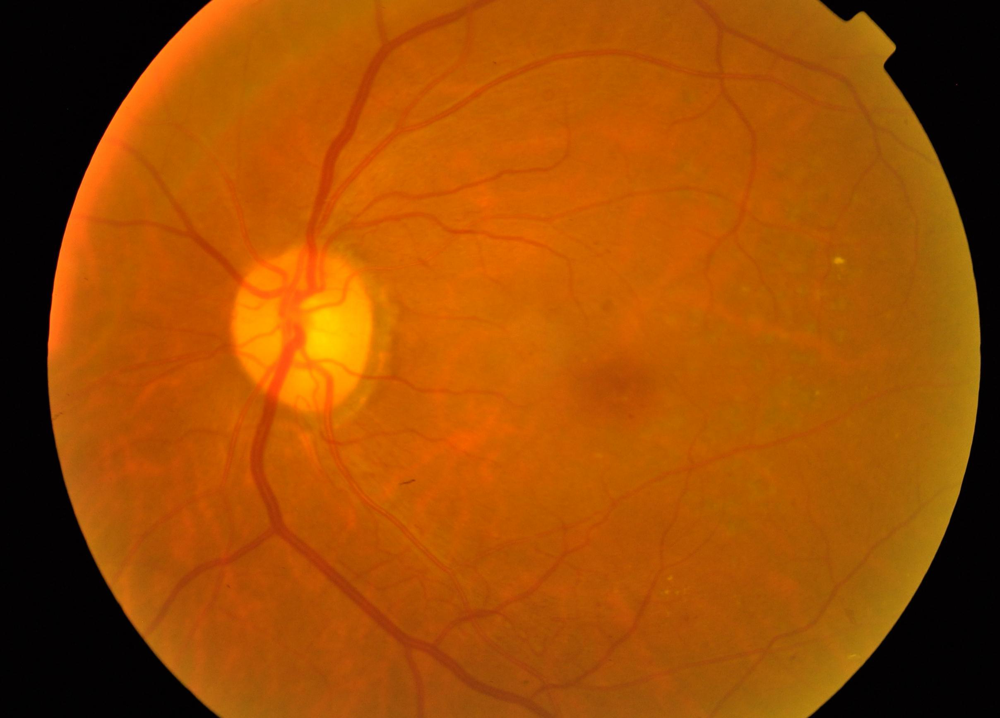
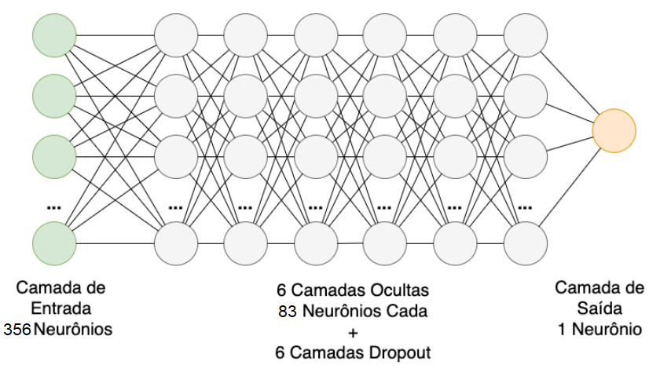
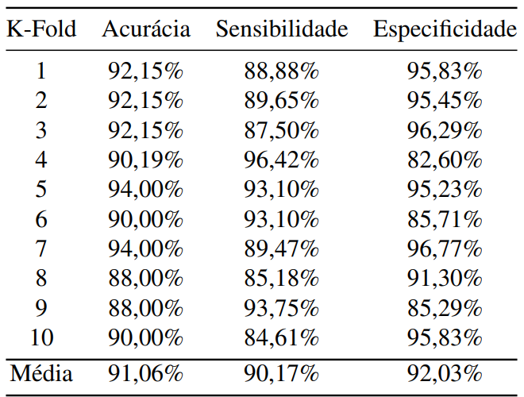

Imagem de exame do fundo do olho
Imagem normal/original de um exame de fundo do olho.

Imagem de exame do fundo do olho - pré-processada
Imagem pós 1ª fase do pré-processamento de imagem.

Imagem de exame do fundo do olho - pré-processada
Imagem pós 2ª fase do pré-processamento de imagem.

Rede Neural Utilizada
Estrutura da rede neural utilizada.

Resultados Rede Neural
Resultados da rede neural que será utilizada na API para classificar as imagens.

Tecnologia que será utilizada para desenvolver a API
Será utilizado o Django, pois é um framework em python que facilita a integração com a chamada de classificação da rede neural treinada. Além de também das etapas de pré-processamento.